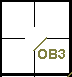
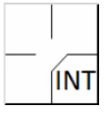

action { batter -> OB3 }

Lorsqu’un arbitre accorde au batteur ou à tout autre coureur une ou plusieurs bases à la suite d’interférence ou d'obstruction, le scoreur officiel attribuera une erreur au compte du défenseur qui a commis cette interférence ou obstruction, quel que soit le nombre de bases que le batteur, le coureur ou les coureurs ont gagné [OBR 9.12(c)].
Une interférence défensive est commise par un défenseur lorsqu’il gêne un batteur pour l’empêcher de frapper un lancer [OBR Définition des termes].
Le joueur de champ qui a commis l'interférence (généralement le receveur) se voit attribuer une erreur, notée « INT ».
Une interférence offensive est commise par l’équipe en attaque lorsqu’elle gêne, entrave, obstrue ou trouble la progression d’un défenseur pour l’empêcher d’accomplir un jeu [OBR Définition des termes]. Ceci est abordé dans les règles 13 et 14 des «Éliminations automatiques».
Une obstruction est une action par laquelle un défenseur, n’étant pas en possession de la balle ni en position pour attraper une balle, gêne la progression d’un coureur [OBR Définition des termes].
L'obstruction d'un coureur-batteur avant qu'il n'atteigne le premier but est une erreur décisive, enregistrée comme « OB » (en majuscules) suivi du numéro du joueur de champ qui a commis l'obstruction.
NB: Ni « INT » ni « OB » ne comptent comme un At-bat.
L'obstruction d'un coureur est une erreur de base supplémentaire et est enregistrée avec « ob » (en minuscules) suivi du numéro du joueur de champ qui a commis l'obstruction.
NOTE: Si l'arbitre signale une « obstruction » et que, de l'avis du scoreur, le coureur aurait avancé de toute façon, l'action est enregistrée comme si elle s'était déroulée normalement, et aucune obstruction n'est reprochée au défenseur.
IMPORTANT: Les avancées réalisées par « obstruction » (en minuscules « ob ») ne sont pas enregistrées dans la colonne « IO » de la feuille offensive, qui ne doit être utilisée que pour les avancées du frappeur-coureur vers la première base via « INT » ou « OB » (en majuscules).
Exemple 42: Le coureur atteint la première base suite à une interférence du receveur. Marquez l'action comme « INT » et imputez au receveur une erreur décisive.
| WBSC | Transcription dans l'outil de scorage | Outil |
|---|---|---|
|
 |
/* Le frappeur atteint le premier but suite à l'interférence du receveur. */ action { batter -> INT } |
Exemple 43: Le coureur atteint la première base suite à une obstruction du défenseur de la première base. Indiquez « OB » suivi du numéro du joueur ayant commis l'obstruction. Imputez une erreur décisive au joueur responsable, en l'occurrence le défenseur de la première base.
| WBSC | Transcription dans l'outil de scorage | Outil |
|---|---|---|
|
|
/* Le premier frappeur atteint la première base suite à une obstruction du défenseur
de la première base. */ action { batter -> OB3 } |
 |